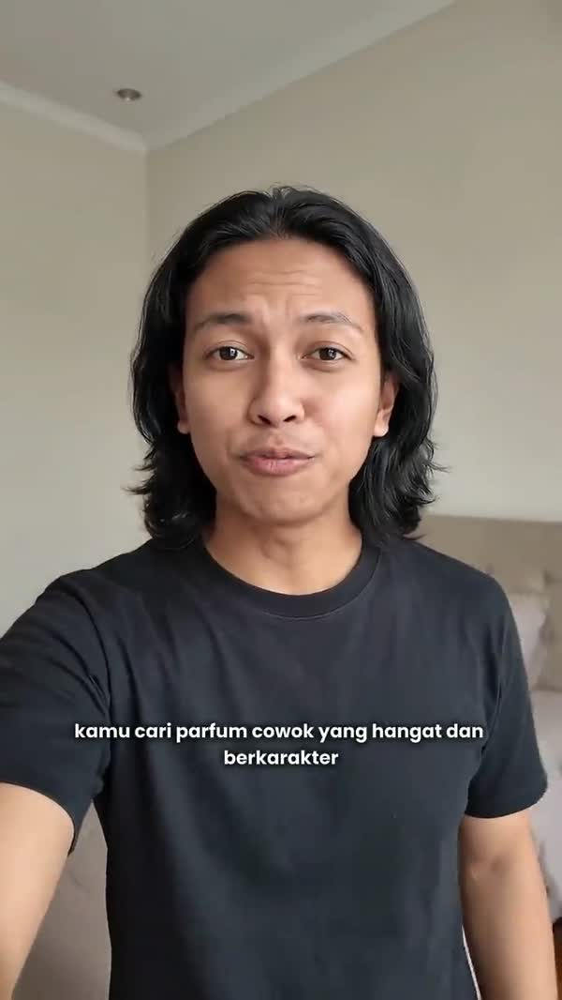

Human-written, AI-produced,
hand-finished.
A creative department for brands that refuse to look ordinary — commercial film, photography and design, on one monthly retainer.

Directed by us
The models change every few months. The writing, the direction and the final cut do not — those stay with us.
Projects delivered
Brand partners
Countries served
Average client rating
Trusted by
01Capabilities
Four disciplines,
one standard of finish.
We deliberately do not do everything. We do these four, and we take each of them to the point where the work holds up on any screen your brand appears on.
02Selected work
Every brand deserves
its own language.
Hover to preview, click to watch in full. Each piece below was written, directed and finished by the same small team.
Nothing filed under this category yet.
03Stills
Detail that cannot be faked.
Art-directed frame by frame, generated with AI, retouched by hand — then exported ready for marketplace, retail and paid media.
04How we work
Four steps,
no surprises.
The same rhythm every month. You always know what is being written, what is being built, and what lands next.
05Retainers
A creative department,
without the headcount.
One monthly agreement covering film, photography and design. No per-asset invoicing, no surprises at the end of the month. Cancel with 30 days' notice.
Included in every tier.
AI does the heavy lifting. The writing and the finishing stay human.
Prices exclude VAT and third-party costs such as talent, props and paid media. One-off projects are available on request.
06Clients
In the words of the
people we build for.
Next step
You have the product.
Let us make people look at it.
Tell us what you sell and where you need it seen. You will have a concept and a quote within two working days — at no cost and with no obligation.